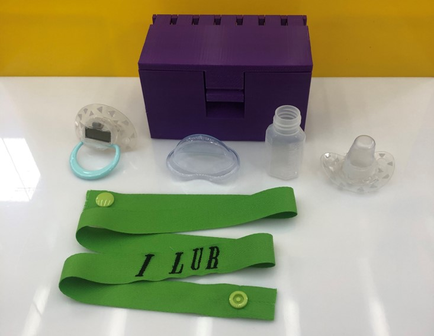

코로나를 예방과 파악을 위해 가장 중요한 체온 측정!
요즘 시기 어딜가나 체온 측정은 필수적이다.
하지만, 어린아이들에게 체온 측정은 조금 어려울 수 있다.



#상품 전체 사진


+ 하나의 패키지 상품으로 가격도 저렴! 배송비도 아끼고!
: 관련 제품을 사기 위해서는 체온계, 약통, 쪽쪽이, 스트랩 등을
개별로 구매 해야 하지만 패키지 상품 하나로 모두 즐기는 행복함
+쪽쪽이, 체온계, 약먹이기 기능을 하나의 크기로 소지하여 부피 절감!
: 항상 짐이 넘쳐나는 육아! 합체형으로 즐기는 편안함
+보관용 박스 제공으로 편리성 up!
+스트랩의 각인 기능 추가!
: 전화번호, 아기 이름, 애칭 등을 새겨 쪽쪽이 분실 방지 및 미아 방지 가능!
+쉽게 구할 수 있는 일반 약통에 규격화된 사용방법!
: 계량도 편리하고 약을 섞기도 간편